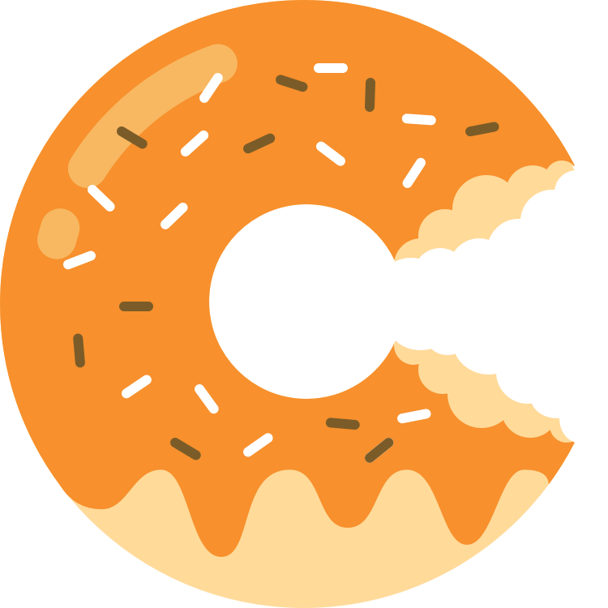

{% extends "layout_nocopy.html" %}
{% block page %}

<div class="container theme-showcase" role="main">

    <div class="absolute-center" style="background-color: #1c1d25; height: 835px; width: 100%;"></div>

    <!-- Main jumbotron for a primary marketing message or call to action -->
    <div id="homepage-jumbotron" class="jumbotron absolute-center">
	<script src="https://cdn.dashjs.org/latest/dash.all.min.js"></script>
        <video class="background-video" id="background-video" data-dashjs-player src="./static/videos/stream.mpd" autoplay loop muted></video>
	    <div class="container pos-center">
		<!--<canvas id="canvas" style="position: absolute; z-index: 0; width: 100%; top: 0; left: 0;"></canvas>-->
		
		<h1>Caltech Donut</h1>
		<br>
		<p class="large-text light-text"><button class="btn btn-primary pos-center">Learn More</button></p>
	    <div>
    </div>
</div>

<script>
setInterval(function(){ 
    if (window.outerWidth < 800 && document.getElementById("background-video")) {
	document.getElementById("background-video").outerHTML = "";
    }
    if (window.outerWidth > 800 && document.getElementById("background-donut")) {
        document.getElementById("background-donut").outerHTML = "";
    }
}, 1000 / 60);
</script>

<!--<script>
var cn = document.getElementById("canvas");
var c = cn.getContext("2d");
c.canvas.width  = window.innerWidth;
c.canvas.height = window.innerHeight;

var mouse = {x:0, y:0};

function getTouchPos(canvasDom, touchEvent) {
  var rect = canvasDom.getBoundingClientRect();
  return {
    x: touchEvent.touches[0].clientX - rect.left,
    y: touchEvent.touches[0].clientY - rect.top
  };
}

canvas.addEventListener("touchstart", function (e) {
  var touch = e.touches[0];
  mouse.x = touch.clientX;
  mouse.y = touch.clientY;
}, false);

function main() {
  var img = new Image();
  img.src = '../static/images/Donut.png';

  img.onload = function() { c.drawImage(img, mouse.x, mouse.y, 40, 40); };
};

$(window).on('resize', function(){
      var win = $(this);
      if (win.width() <= 700) { $( "div" ).remove( ".background-video" ); }
});

setInterval(main, 1000 / 60);
</script>-->
{% endblock %}
